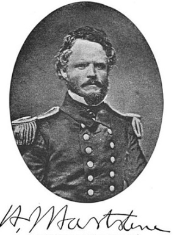
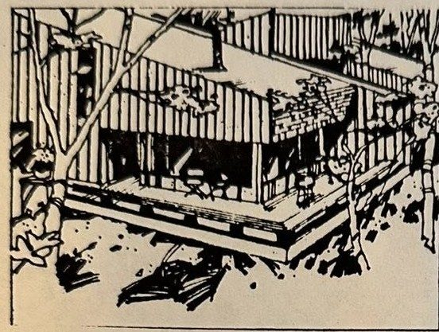
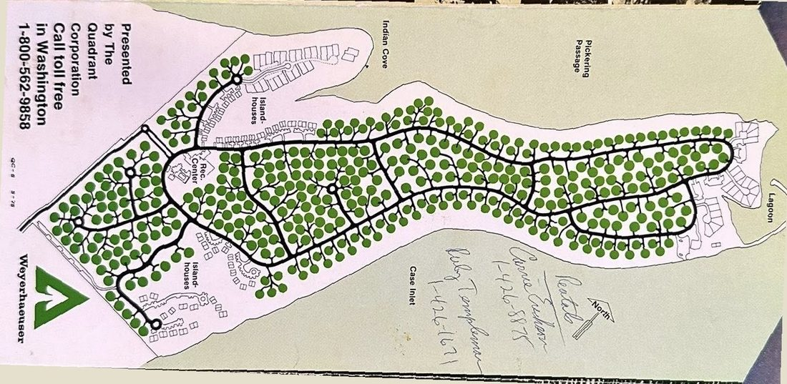
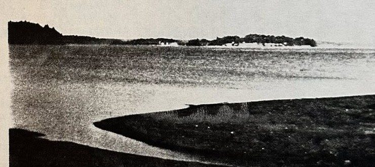
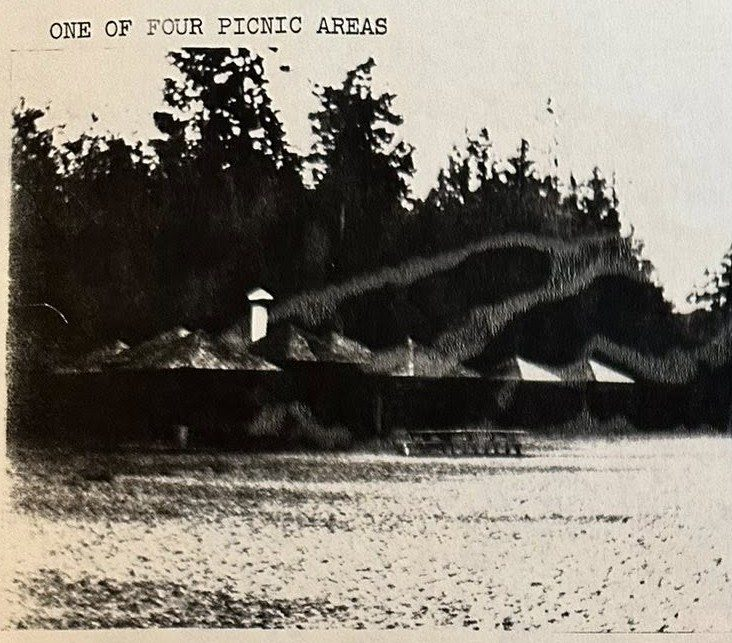

Our Stories & History
The people and memories behind the Pointe, gathered from residents past and present.
Collective memories
Once upon a time, four would-be historians were struck by a sobering thought: most of the original residents from the 1970s had left, for one reason or another. As their numbers dwindled, so did the sources of the oral history of the beginnings of Hartstene Pointe.
A plan was made to find them and listen to their stories. To support sometimes-contradictory accounts, some memories clear as a bell, others foggy in the details, they gleaned through the archives of board meetings, newsletters, correspondence, personal letters and lawsuits.

Stories from the Pointe
A collection of remembrances contributed by residents over the years:
- PDFLooking Back at 42 YearsRick & Peggy Johnson
- PDFThe Pointe of Caringby Suzanne Bonciolini
- PDFTo the Point(e): How We Came to Live at the Pointeby Suzanne Bonciolini
- PDFThad & Liz Thomas's Taleas reported by Fiona Leslie
- PDFMy Love of the PointeLaura St. George
Additional remembrances, including Shirley Marrs' memories as an original pioneer, Ken Brown on the island forest, and Walt Tupper's “Welcome to Fantasy Island”, are held in the Association archives.
The original vision
Not long ago a resident turned up the original sales brochure that The Quadrant Corporation, a Weyerhaeuser company, used to introduce Hartstene Pointe when lots first went on the market in the mid-1970s. Its photographs and typewritten pages are a window into how the Pointe was imagined at the very beginning.
There's something about an island like Hartstene in Puget Sound that takes you “out of this world” the minute you cross the bridge from the mainland. It's a quieter, live-and-let-live world, developed by the people who care. Hartstene Pointe is one of those rare, nearby getaway places where the trees still outnumber the people, and always will.

The brochure describes a community where each lot “adjoins a wooded, permanently deeded green belt,” where “even the lodge, tennis courts, and swimming pool are embraced by forest,” and where about half the land belongs to everyone, including more than three miles of beach. Owners were invited to swim in the heated clubhouse pool, water ski in the calm waters of Pickering Passage, fish for sea run cutthroat, or walk the sandy beach and dig for butter clams.

A fact sheet tucked inside spelled out the particulars: roughly 215 acres, about half of it common greenbelt; circular lots 80 to 90 feet across, each separated by at least ten feet of green belt for privacy; paved blacktop roads and underground utilities; a 6,000-square-foot clubhouse with a full kitchen; three and a half miles of community beach; a heated pool, a wading pool and a Jacuzzi; and some five and a half miles of pedestrian trails “with wooden bridges across draws and ravines.” An architectural committee, it noted, would review and approve all building plans, the same role the Permit Review Committee fills today.


Even the crest at the top of this site traces back to that first brochure: the green shield with its mountain, moon and water was the mark Quadrant chose for Hartstene Pointe, and it has watched over the community ever since.
Contribute a story
We invite contributions of stories to enhance our history. Send them to the office via our contact page.